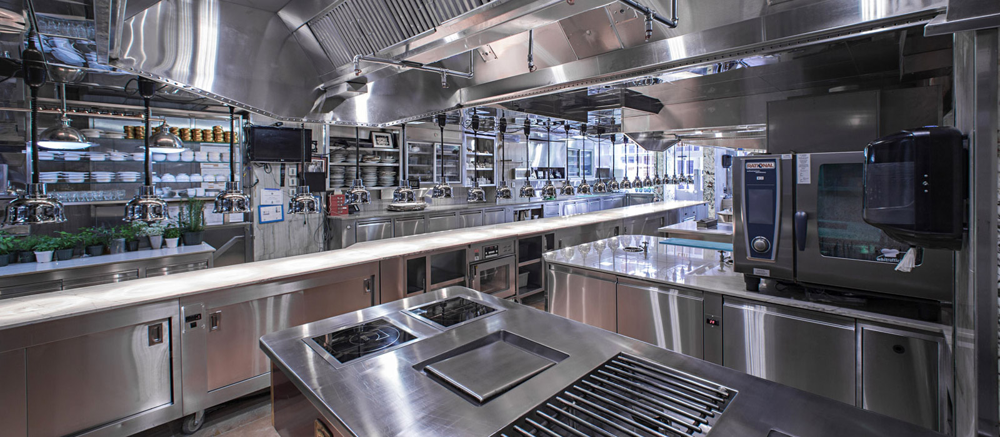

The Kitchen Enviroment: Fire, Sweat, and Sharp Objects
The professional kitchen is a hot, dangerous and stressful enviroment. Nearly every thing can burn or cut you including your fellow coworkers. It is also an enviroment that demands constant attention and a certain degree of perfection.
The stress of the enviroment is one of the reasons many people are drawn to the occupation of being a chef.
